IBM PowerVC
IBM PowerVC is built on OpenStack. It provides simplified virtualization management and cloud deployments for IBM AIX®, IBM i and Linux virtual machines (VMs) running on IBM® Power®. The offering is designed to build private cloud capabilities on Power servers and improve administrator productivity. It can further integrate with cloud environments through higher-level cloud orchestrators.
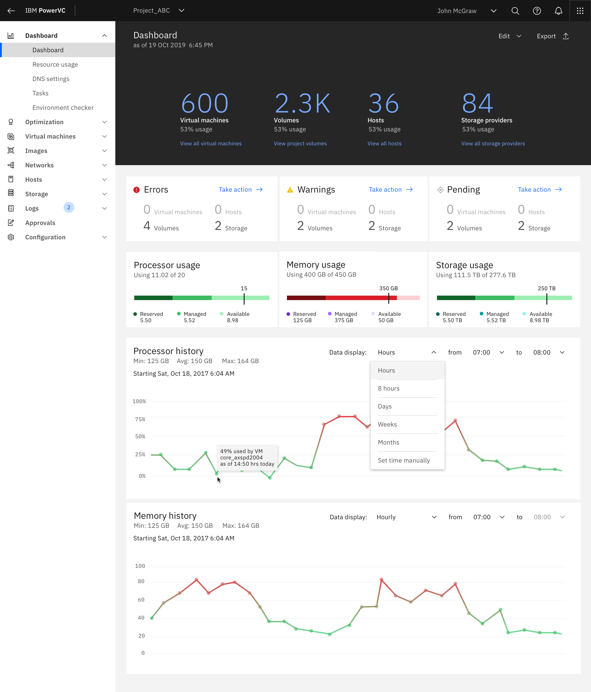
Project overview
System administrators and technical users managing virtual machines (VMs) on IBM Power Systems via PowerVC face significant usability challenges due to a complex and cluttered user interface. The existing UI suffers from deep navigation hierarchies, visual clutter, and inadequate contextual guidance, leading to inefficiencies in performing critical tasks such as VM provisioning, patch management, and system scaling. These issues result in increased cognitive load, slower task completion times, and a suboptimal user experience, particularly when managing large-scale environments with thousands of VMs and volumes.
The project redesigns the PowerVC interface to deliver a secure, scalable, and streamlined experience aligned to the actual workflows of system architects, administrators, and technical users — grounded in comprehensive generative and qualitative research into pain points and needs. The goal: sharpen information architecture, cut visual clutter, surface performance feedback clearly, and build in contextual help, so users complete critical tasks faster and with more confidence.
Snippets of the legacy UI
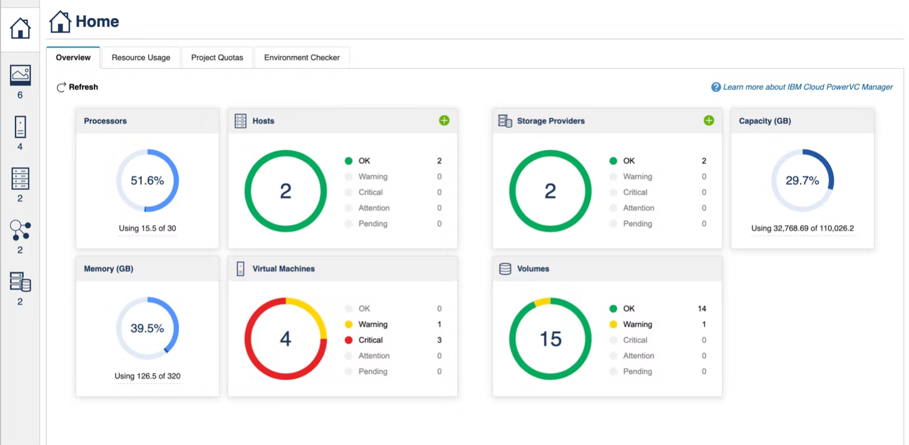
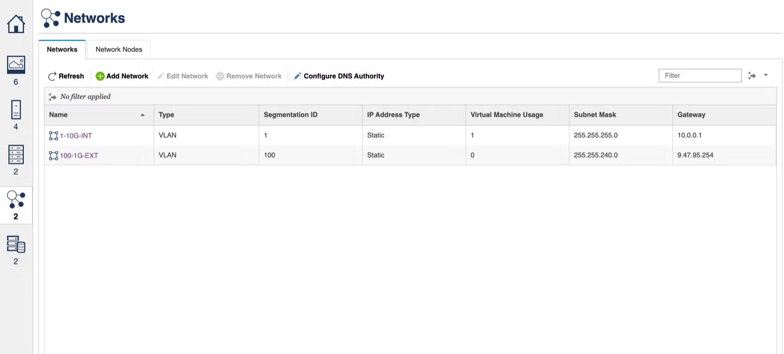
Left: the Home dashboard. Right: the Networks page — both show the visual density and inconsistent status treatment users struggled with.
Problem statement
PowerVC users were struggling with:
- Complex, fragmented workflows for VM creation and management that involved multiple manual steps.
- Inconsistent user experience between the GUI and API interfaces, causing confusion and errors.
- Limited bulk operation capabilities, making management of numerous VMs tedious and time-consuming.
- Lack of real-time feedback and error transparency during critical operations, leaving users uncertain about task status.
- High training costs and skill barriers for new users due to interface complexity and inconsistent interactions.
The primary challenge was to streamline VM lifecycle management across both GUI and APIs, enhancing usability while maintaining the platform’s powerful capabilities.
Research
The research phase of our project was a strategic and in-depth exploration, aimed at understanding and addressing the needs of a broader and more diverse user base. We employed a blend of generative and qualitative research methodologies to ensure a holistic understanding of user behaviour, pain points, and aspirations.
In the generative research phase, we collaborated closely with 6–8 customers over a six-month period, building sustained partnerships that yielded deep, actionable insights. This engagement was continuously expanded to include new customers, allowing us to capture evolving perspectives and maintain relevance throughout the process.
Our qualitative research efforts were equally comprehensive, leveraging active participation in user forums where PowerVC users openly discussed their experiences, needs, and challenges. These organic insights were critical in shaping our understanding of real-world usage. To enrich our findings, we conducted a Heuristic Evaluation to identify usability issues from an expert perspective, and supplemented this with data from a targeted TechU survey, further grounding our research in user sentiment and behaviour.
Persona
Three core personas emerged from the research, grounded in real roles and responsibilities rather than assumed ones — each with distinct goals, challenges, and needs that shaped the Hill Statements below.
The invaluable input received through the Net Promoter Score (NPS) feedback and the detailed Request for Enhancements (RFEs) played a pivotal role in pinpointing the critical focal points that warranted our utmost consideration. With precision and care, we undertook the task of methodically categorizing and skillfully prioritizing the wealth of insights we had accumulated. This deliberate process not only crystallized our understanding of the user landscape but also paved the way for the inception of the research and design stages. By meticulously organizing and ranking these insights, we laid a solid foundation, ensuring that our subsequent endeavors were guided by a comprehensive awareness of user needs and aspirations. In essence, the NPS feedback and RFEs acted as guiding beacons, illuminating our path forward and empowering us to embark on a journey of purposeful and user-centered exploration and creation.
Heuristic Evaluation
I conducted a heuristic evaluation of the live PowerVC application against Nielsen's usability heuristics, screen by screen, flagging specific violations and recommendations across the dashboard, VM management, host configuration, and diagnostics flows.
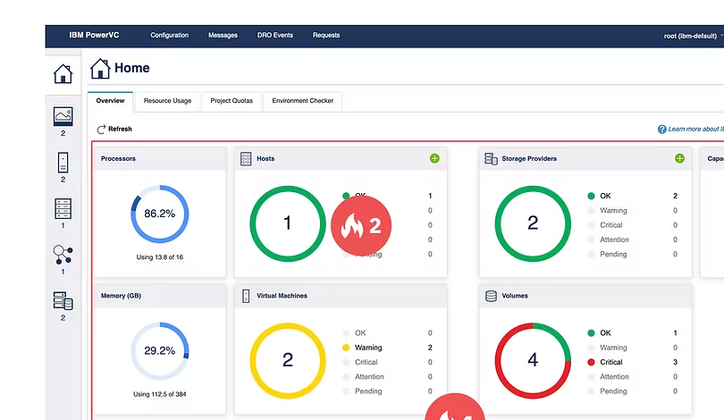
Status cards lack a strong visual identity, forcing users to map each icon and label to the underlying state.
Fix: give each status a clear, distinct visual treatment for faster recognition.
Doughnut graphs look clickable but aren't, creating false affordance.
Fix: follow standard interaction patterns so clickable and static elements are visually distinct.
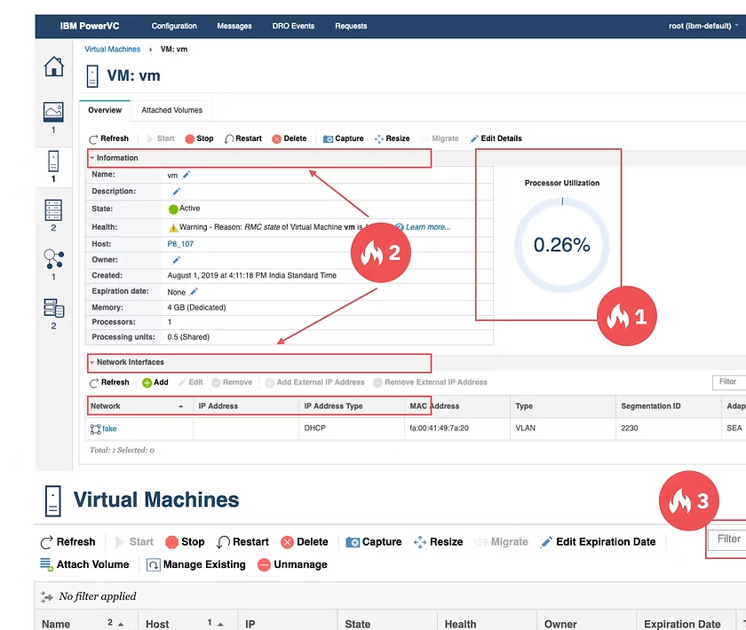
Processor utilization is buried several clicks deep instead of visible on load.
Fix: surface key status metrics directly on the landing view.
Key details sit below the fold inside an accordion, adding scroll effort for common tasks.
Fix: surface high-use information above the fold.
The VM filter is visually de-emphasized and disappears on scroll — hard to find at scale with 2,000+ VMs.
Fix: keep the filter persistently visible and prominent.
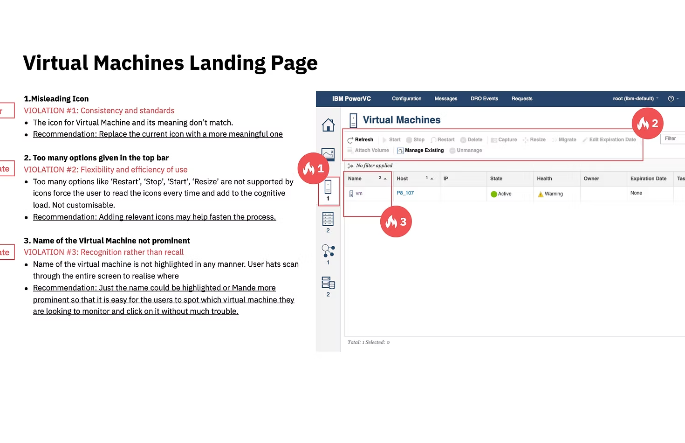
The virtual machine icon doesn't visually match its meaning.
Fix: replace it with a more literal, recognizable icon.
Too many icon-only actions (Restart, Stop, Start, Resize) force users to read each one every time.
Fix: pair icons with labels to remove the lookup cost.
VM names aren't visually prioritized, so users must scan the full row to identify the right machine.
Fix: give the VM name stronger visual weight in the row.
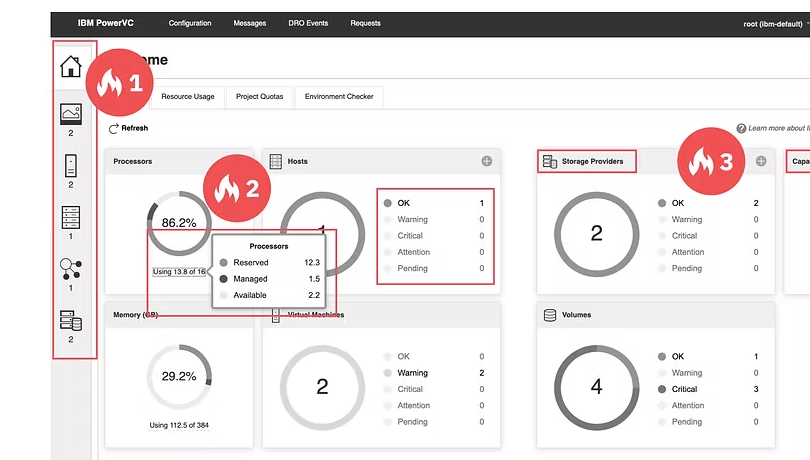
Nav icons rely on numeric badges instead of labels, which disorients users.
Fix: pair every icon with a meaningful label.
Doughnut-graph legends appear inconsistently — sometimes on load, sometimes only on hover.
Fix: standardize the interaction pattern across all graphs.
Some card headers are clickable links, others aren't, with no visual distinction between them.
Fix: make link affordance consistent across all cards.
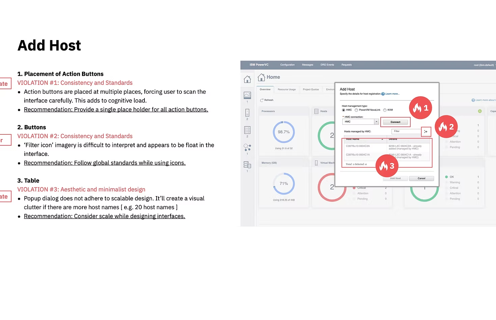
Action buttons are scattered across multiple locations, forcing users to hunt for them.
Fix: consolidate into one consistent action area.
The filter icon doesn't follow standard iconography and is hard to interpret.
Fix: use conventional, recognizable icon patterns.
The host list popup isn't built to scale — with 20+ hosts it becomes visually cluttered.
Fix: design the popup to handle large host counts gracefully.
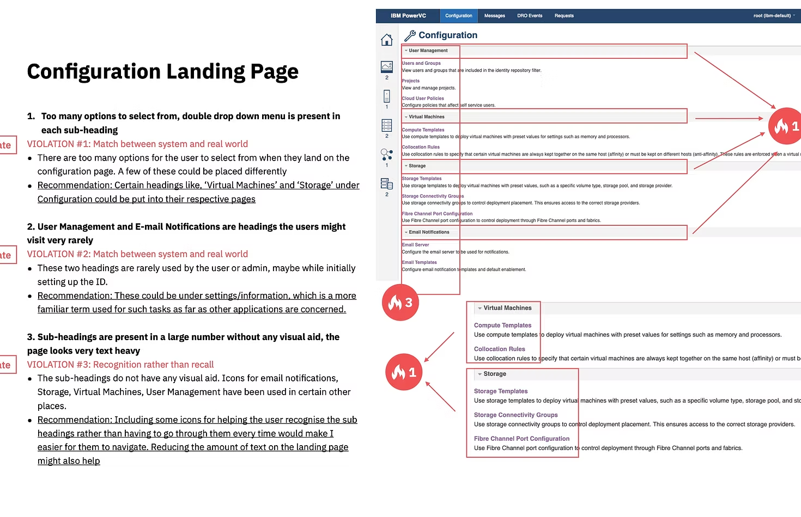
Too many nested options surface at once, including a redundant double-dropdown pattern per section.
Fix: relocate settings like Virtual Machines and Storage into their own dedicated pages.
User Management and Email Notifications are used so rarely they don't belong at this level.
Fix: move them under a general Settings area — the term users actually expect.
Dense, text-only sub-headings with no icons make the page feel heavy and hard to scan.
Fix: add icons and trim text to ease recognition.
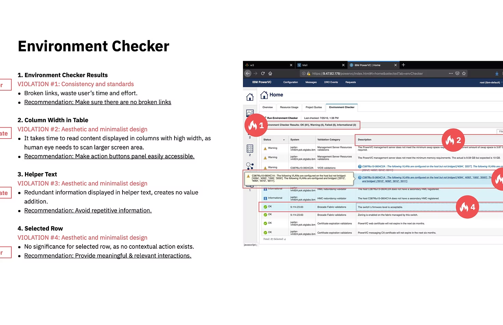
Broken links in the results waste user time and erode trust in the tool.
Fix: audit and fix all links before release.
Overly wide table columns force excessive horizontal scanning to read a single row.
Fix: tighten column widths and keep actions easily reachable.
Helper text repeats information already shown elsewhere on screen, adding no value.
Fix: remove redundant helper copy.
Selecting a row has no visible effect or follow-up action.
Fix: give row selection a clear, meaningful next step.
Deriving the Three Hills in the PowerVC Project
At IBM, we follow the Enterprise Design Thinking (EDT) framework to align design, development, and business outcomes. A cornerstone of this approach is the Hill Statement — a clear, inspirational, user-centered goal that expresses what a user will be able to do, not just what the system will do.
In the PowerVC project, the Hill development process was research-driven, collaborative, and iterative, ensuring that our Hills represented real user needs while driving technical feasibility and innovation.
Step 1: Grounding in User Research
We began with an extensive research phase that included:
- Generative research with 6–8 enterprise customers over a 6-month period
- Qualitative analysis through PowerVC user forums
- Heuristic evaluation of the existing platform
- TechU survey to gather broad-based feedback on performance, usability, and needs
This effort highlighted key themes:
- Users were concerned about security and reliability of updates.
- System admins needed to handle large-scale environments without performance degradation.
- Technical users wanted faster, frictionless experiences for common tasks.
Step 2: Persona Development & Role-Based Needs
We defined 3 core user personas, based on real roles and responsibilities:
- Alan – System Architect: Focused on secure, stable infrastructure and patching without disruption.
- Monica – System Administrator: Manages thousands of VMs and volumes daily; performance and scalability are critical.
- Steve – Technical User: Executes routine VM tasks; values speed, ease, and reduced cognitive load.
These personas helped contextualize pain points and guided us toward crafting goals that are both aspirational and rooted in reality.
Using IBM’s Hill-writing practices, we conducted Hill Workshops involving UX designers, offering managers, engineering leads, design researchers, and stakeholder sponsors. Together, we transformed key user needs into Hill Statements — concise, powerful expressions of what success looks like for our users. Each Hill was framed around three criteria: Who is the user? What action or outcome will they achieve? Why is it valuable?
The Three Final Hills
“Alan, a system architect, can ensure his PowerVC UI is secure by applying updates on the fly.”
This Hill was derived from Alan's need for real-time patching and system integrity without causing downtime or disruption. The team prioritized a design that supports seamless updates with minimal risk.
“Monica, a system admin, can manage 10K VMs and 25K volumes using PowerVC, without any significant performance lag.”
Research showed Monica frequently works with high VM volume, and existing performance bottlenecks slowed her work. This Hill guided backend optimization and interface efficiency improvements.
“Steve, a technical user, can request a new VM in less than 1 minute.”
Steve needed to execute high-frequency tasks quickly. Research highlighted frustration with multi-step processes and delays, leading to a focus on simplifying and speeding up routine workflows.
Approach
Recruiting Design Partners
During the generative research phase, we fostered partnerships with 6-8 customers for a span of six months, extending our reach to a fresh set of customers to ensure ongoing interest and invaluable insights.
This was accomplished by talking to product owners to gather data about customers using the product. Identifying customers from various sectors to ensure a well rounded feedback, it included contacting their sales/technical representatives providing a brief of the program and if they agreed then following it up with the formal requirements.
Creating Discussion Guides & Generating Insights
In my role as a user advocate, I orchestrated research calls, ensuring focused discussions and meaningful insights. This involved selecting research topics and creating discussion guides tailored to each session, then collaborating with designers and developers to understand what information they needed from customers. Post-session, I gathered notes, grouped findings, and distilled them into themes the wider team could act on.
An intriguing challenge arose in efficiently recording and tracking gathered feedback. To address this, I devised a structured Excel sheet that harmonized both development and design perspectives, allowing for clear filtering, prioritization, classification, and status tracking of key findings.
Design Sessions
We conducted multiple workshops with our design partners – the customers – to glean their perspective. Throughout the project's evolution, we remained steadfast in our commitment to include the customer voice, conducting bi-weekly co-design sessions and interviews.
In the pursuit of sustained design partner engagement, I infused creativity into research sessions. Activities such as card sorting, scenario-based questions, and interactive prototype tasks were introduced, reinvigorating their participation and enriching our dataset. This immersive and adaptive research phase not only uncovered user needs but also pushed the boundaries of our engagement strategies, a truly user-centric and agile process.
Complexity Analysis
Complexity analysis, an innovative method pioneered by IBM experts, helps understand UI enhancements. It identifies key areas, crucial for refined user experiences. In my role, I conducted extensive analysis comparing the old and new UI, unveiling transformative shifts. This enriched user encounters and productivity. The scrutiny spanned scenarios, revealing design and code differences, guiding rational enhancements and offering fresh evaluation lenses.
Though new to me, Complexity Analysis fostered mindfulness and detailed design consideration. It instilled a holistic outlook anchored in vital aspects: Context shifts, Input parameters, Navigational guidance, System feedback, Error feedback, and New concepts. My design approach is now steeped in this ethos, vital in design ventures and diverse UIs, as these components serve as catalysts for proficiency and excellence.
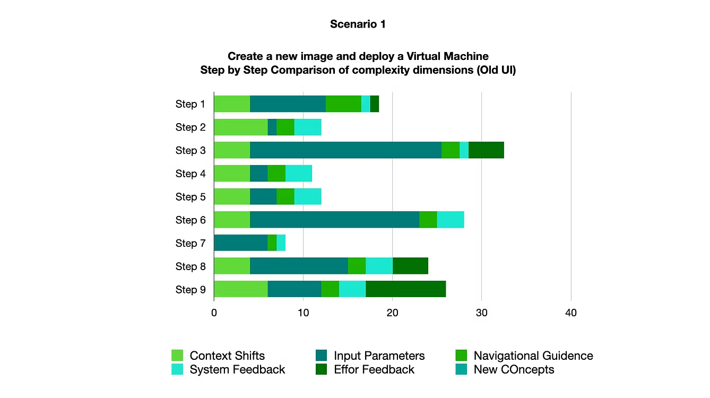
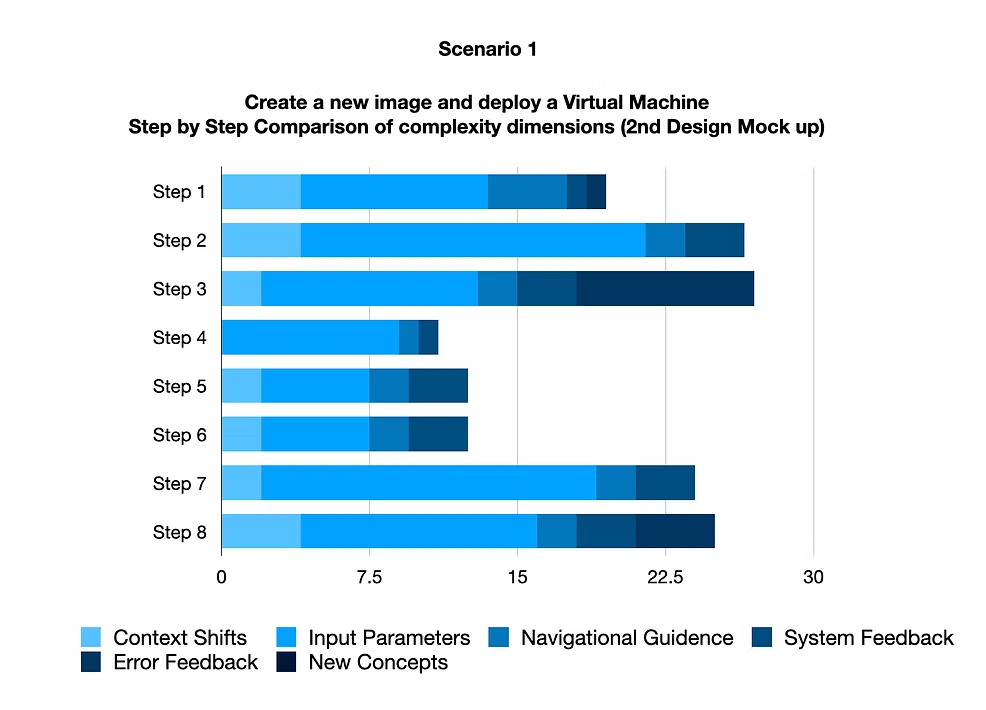
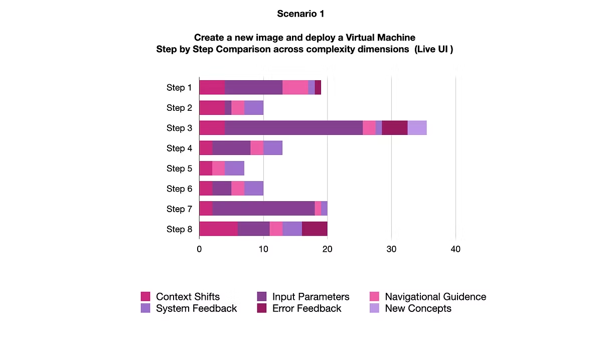
Complexity scoring for the same task — "create a new image and deploy a VM" — across three stages: legacy UI, 2nd design mockup, and live redesigned UI. Scoring dropped as context shifts and input parameters were designed out step by step.
Conducting Demos
Once design concepts existed, we ran structured demonstrations that walked customers through the full experience end to end — validating whether our designs actually solved the problems research had surfaced, not just whether they looked right. We also gave users a downloadable PowerVC test environment to try predefined scenarios independently, generating hands-on feedback outside the guided sessions. How this paired with Complexity Analysis to validate designs quantitatively is covered under Design Validation below.
Hosting Beta Trials
Beyond demos, we ran hosted beta sessions — one-hour remote walkthroughs where customers reviewed the live environment alongside our research and design team, followed by a feedback survey. This fed directly into the formal Beta Testing Program, covered in full later in this case study.
Key insights
Based on the initial data gathered there were areas that required to be addressed:
- Consistency and standards: Consistency to visual and interaction conventions allows for better orientation and coherent behavior patterns. This also applies to consistency in language.
- Flexibility and efficiency of use: With increased use comes the demand for less interactions that allow faster navigation. Users should be able to customize or tailor the interface to suit their needs so that frequent actions can be achieved through more convenient means.
- Aesthetic and minimalist design: Aesthetic considerations should be kept simple and avoid non-useful clutter. Function should always come ahead of form.
- Include wizards to help complete major tasks: Provide handholding for major tasks that have multiple steps required to ensure the entire process is followed.
- Improve quality of information: When help and instructions are needed, they should be accessible, understandable and accurate. This could be represented in the form of a search bar, links to resources, tool tips, etc.
- Recognition rather than recall: Minimize cognitive load by maintaining task-relevant information within the display while users explore the interface. Give users options/suggestions to choose from, instead of having to think up possible options themselves.
- Improve navigation: Information architecture is very deep and it is difficult to find certain features.
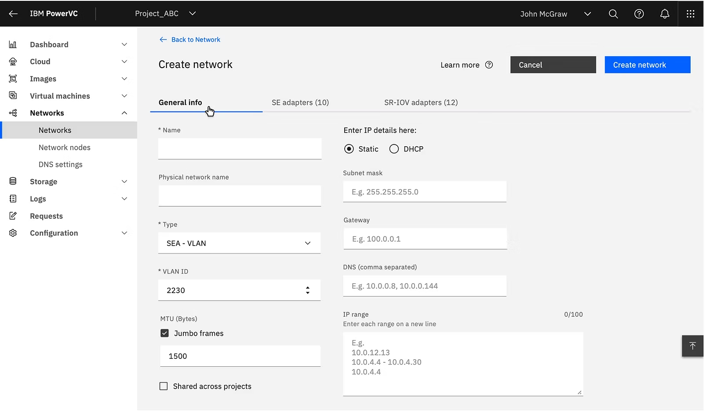
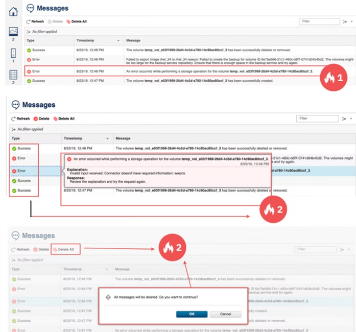
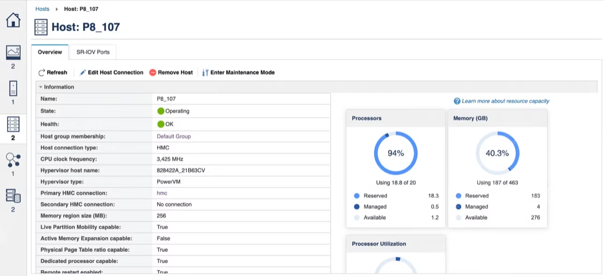
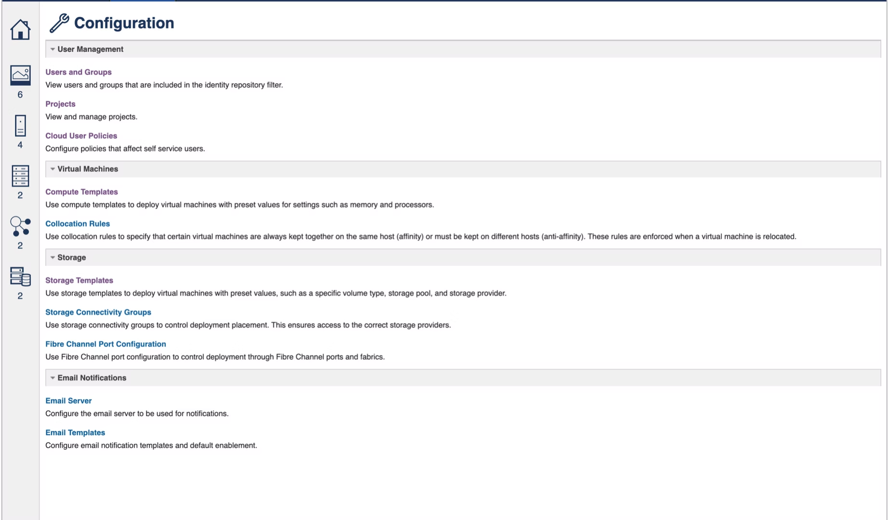
Left to right, top to bottom: guided multi-step network creation, clearer message feedback with delete confirmation, at-a-glance host status, and clearly grouped configuration navigation.
The discovery
Research didn't overturn the problem statement — it confirmed it and gave it sharper edges. None of what surfaced was a single critical blocker; it was a pattern of smaller frictions that, together, meaningfully slowed people down. General sentiment from NPS was consistent with this: PowerVC is a genuinely strong product that simplifies deployments and management, but the day-to-day experience of using it could be quirky in ways that added up.
- The "fragmented workflows" flagged upfront had a clear shape in practice: an information architecture reaching up to 6 levels deep, with panels occasionally linking to each other in ways that lacked coherence — a pattern confirmed directly in customer research sessions, not just assumed.
- Within those workflows specifically, there was no coherent flow from one step of a task to the next — a lot of context shifts, with little sense of progression.
- The system's performance occasionally lags, while certain feedback messages prove perplexing or irrelevant.
- The pace of interaction suffers delays due to misleading cues, technical intricacies, and inadequate feedback messages.
- The high training costs flagged upfront traced back to a specific gap: an absence of upfront contextual information or help, demanding extra time and effort from new users.
- And the inconsistency users described wasn't abstract — it showed up as overcrowded panels hosting multiple competing focal points, giving the interface an overall sense of chaos and disharmony rather than a coherent hierarchy.
OOBE Workshop: Redesigning the PowerVC Onboarding Experience
Following extensive user research on the Out-of-Box Experience (OOBE), we conducted a focused internal workshop to translate insights into actionable design improvements.
Objective: To streamline the onboarding journey for PowerVC by addressing user pain points, clarifying setup flows, and identifying quick wins.
Process: We kicked off with a mind mapping session, clustering user feedback into key themes like installation complexity, unclear prerequisites, and first-time setup confusion. Using dot voting, we prioritized issues based on impact and frequency.
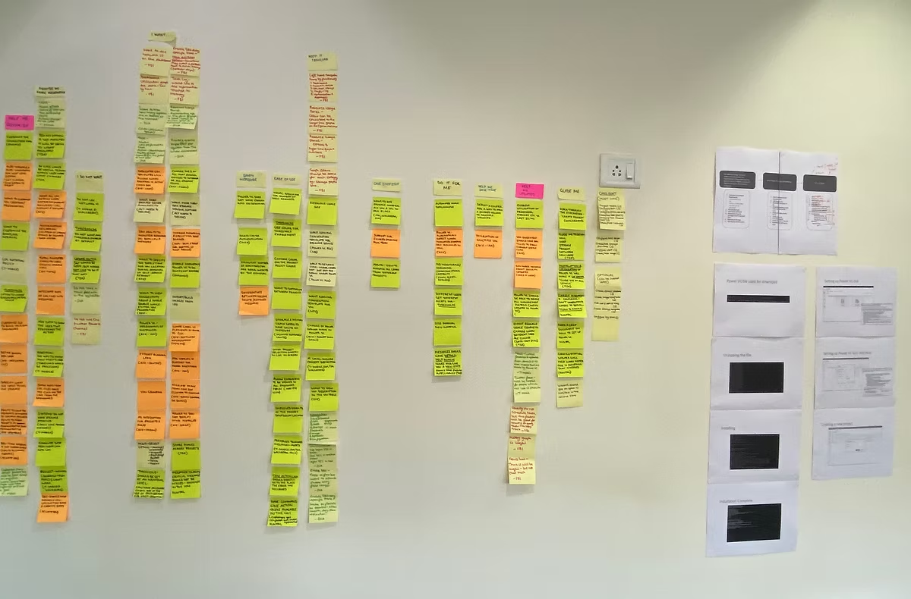
Affinity-mapping the raw feedback wall into themes — ease of use, guidance requests, terminology confusion — before dot-voting on priorities.
Next, we grouped findings under key topics: Environment Planning, Installation Flow, GUI Setup, First VM Creation.
Each team member then individually brainstormed and mapped a revised onboarding flow, tailored to their assigned topic. We reconvened to present and evaluate ideas, focusing on feasibility, user impact, and alignment with technical constraints.
Outcome: The workshop led to a draft of an improved, role-based OOBE, several feasible design enhancements, and clear next steps for prototyping. It also reinforced cross-functional alignment between design, product, and development team.
Proactive Onboarding Assistance
One design response coming out of the workshop was a tiered, proactive support pattern built directly into first-time setup: the interface anticipates when a user might need help rather than waiting for them to go searching for it, and hands off cleanly to a human when it can't resolve something itself.
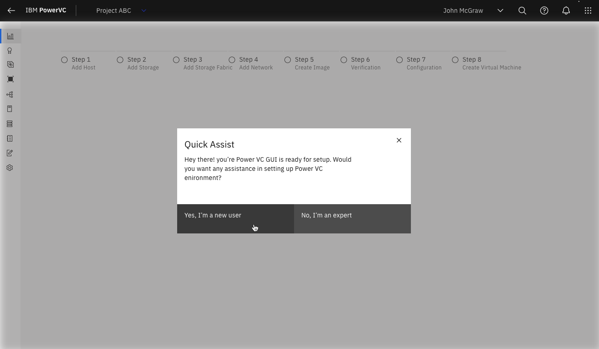
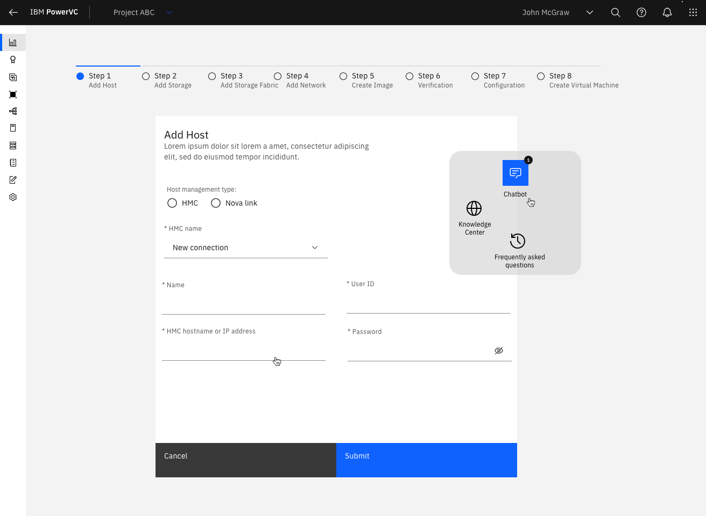
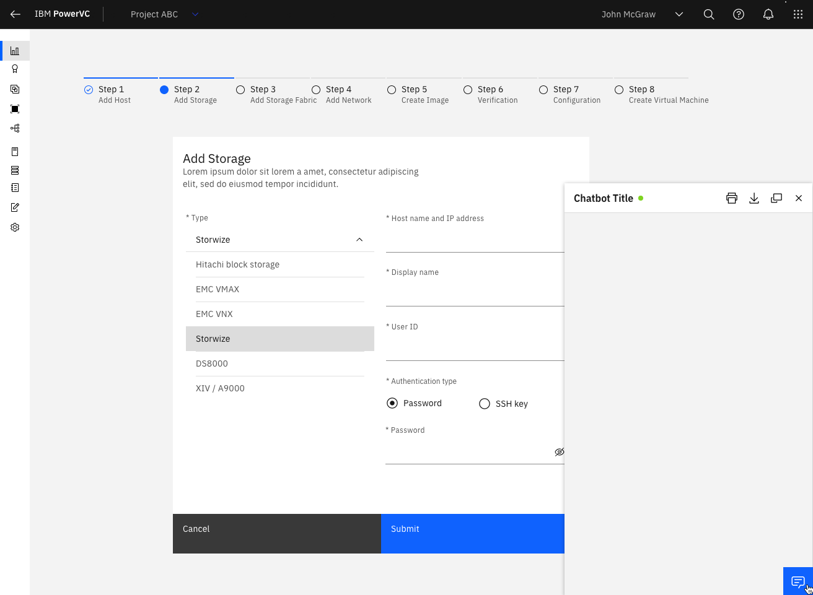
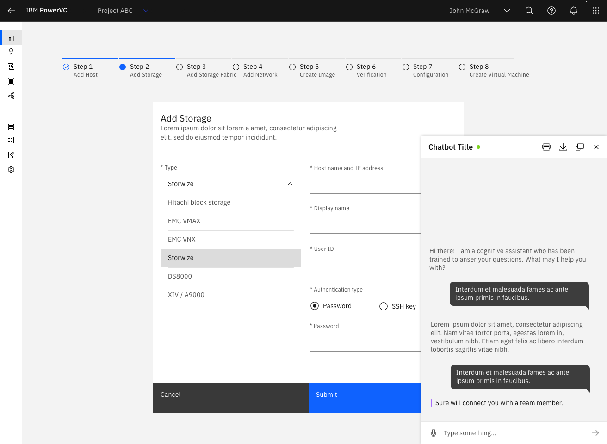
Left to right: Quick Assist surfaces contextual help unprompted at the start of setup; a persistent accessibility-menu entry point keeps help available throughout; the chatbot handles direct questions conversationally; and unresolved queries escalate cleanly to a human team member.
Learning
Leading the research efforts in this project offered a rich learning experience and helped sharpen my skills in planning, execution, and stakeholder engagement.
Structuring Research for Impact
I led the end-to-end research process, which involved defining relevant themes for each research round, crafting discussion guides to ensure we targeted the right user scenarios, and conducting detailed analyses after each session. One of the key challenges I faced was ensuring that every insight was actionable and traceable. As a user advocate, it was critical that no valuable feedback got lost in translation.
After experimenting with several methods, I developed a structured Excel-based tracking system that bridged both design and development perspectives. This document evolved into a single source of truth, enabling the team to filter and prioritize findings, classify insights by theme or feature, track status and ownership, and document decisions and comments from cross-functional reviews.
Sustaining Partner Engagement
Maintaining consistent engagement with design partners over several months was another significant challenge. Midway through, I observed a drop in participation — session cancellations and reduced interest indicated a need to reinvigorate the experience.
To address this, I redesigned the research sessions to be more interactive and engaging by introducing a variety of methods: card sorting exercises, scenario-based discussions, and clickable prototypes with task flows. This refreshed format not only reignited partner interest but also enhanced the richness of the feedback. Sessions became more collaborative, and the insights gathered were more grounded in real use cases.
Takeaways
- Process matters: A well-structured system for documenting and surfacing insights helps drive better decisions and cross-functional alignment.
- Flexibility is key: Adapting methods based on stakeholder behavior and feedback can significantly improve participation and research outcomes.
- Advocating for users is ongoing: It’s not just about collecting feedback — it's about making sure that feedback drives meaningful change.
Peek into the user interface
The redesigned dashboard surfaces errors, warnings, and pending issues upfront with direct action buttons (left). The Create Network flow groups general info, SE adapters, and SR-IOV adapters into one tabbed view, cutting the context-shifting from the legacy flow (right).
“View critical & important information upfront, act quickly on errors, warnings & pending issues, personalize the dashboard on a need basis.”
Every critical number — errors, warnings, pending, live resource usage — is visible without a click, with a direct "Take action" path next to each. History charts carry inline tooltips and flexible time windows, so diagnosing a spike no longer means leaving the page.
Hosts
Alan and Monica manage hosts daily. The redesigned list surfaces status, VM count, and utilization at a glance, with common actions — maintenance mode, remote restart, edit connections — one click away instead of buried in a detail page. The detail view keeps power state, processor, and memory visible immediately, without requiring a tab switch first.
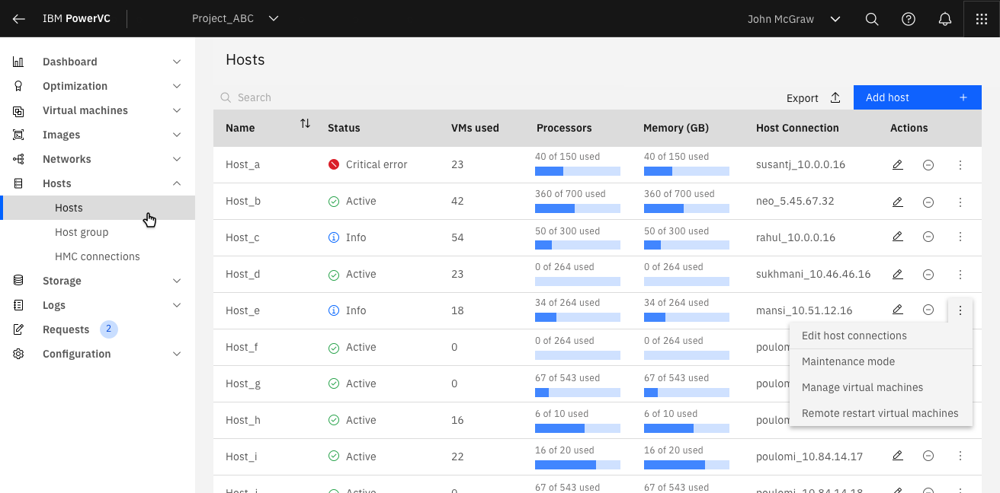
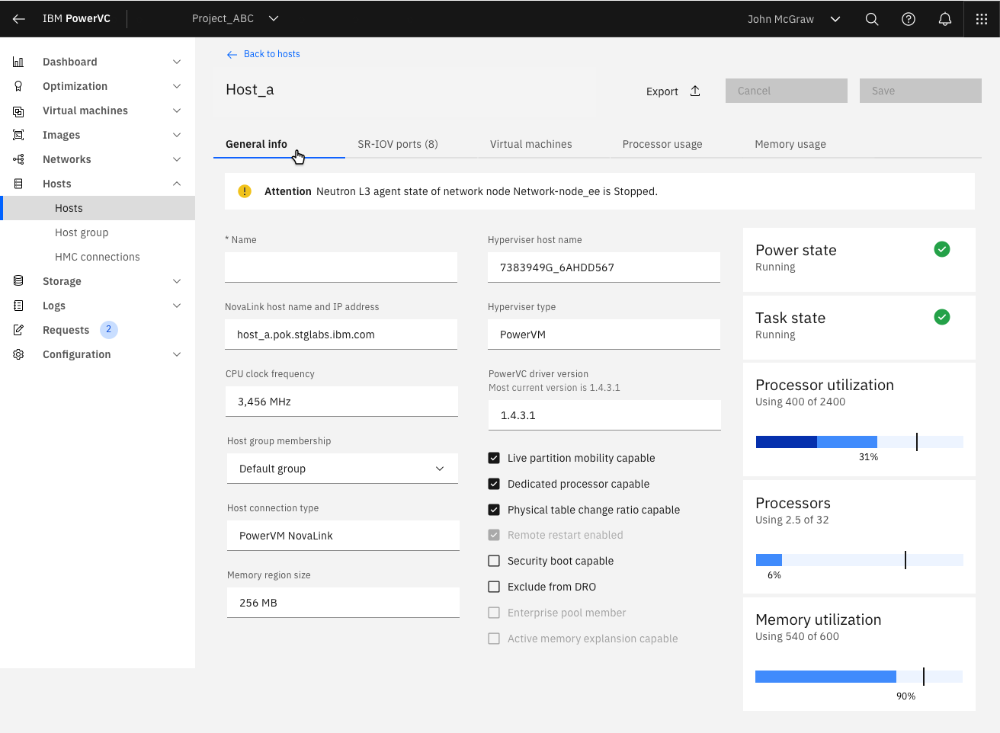
Virtual Machines
Steve's day-to-day work is dominated by routine VM tasks, so the list view exposes status and quick actions — capture, migrate, restart, stop — directly from a row-level menu. The detail view keeps processor, memory, and task state pinned in a persistent side panel, so checking health no longer means navigating away from the record you're editing.
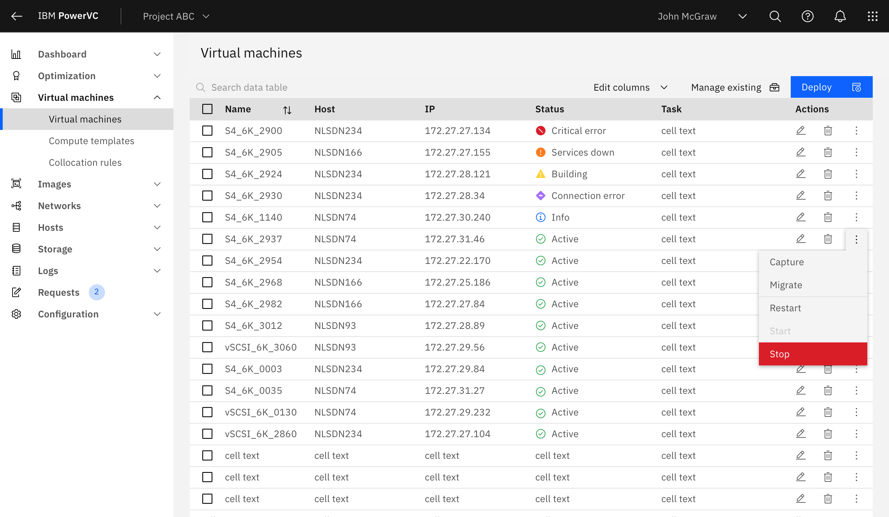
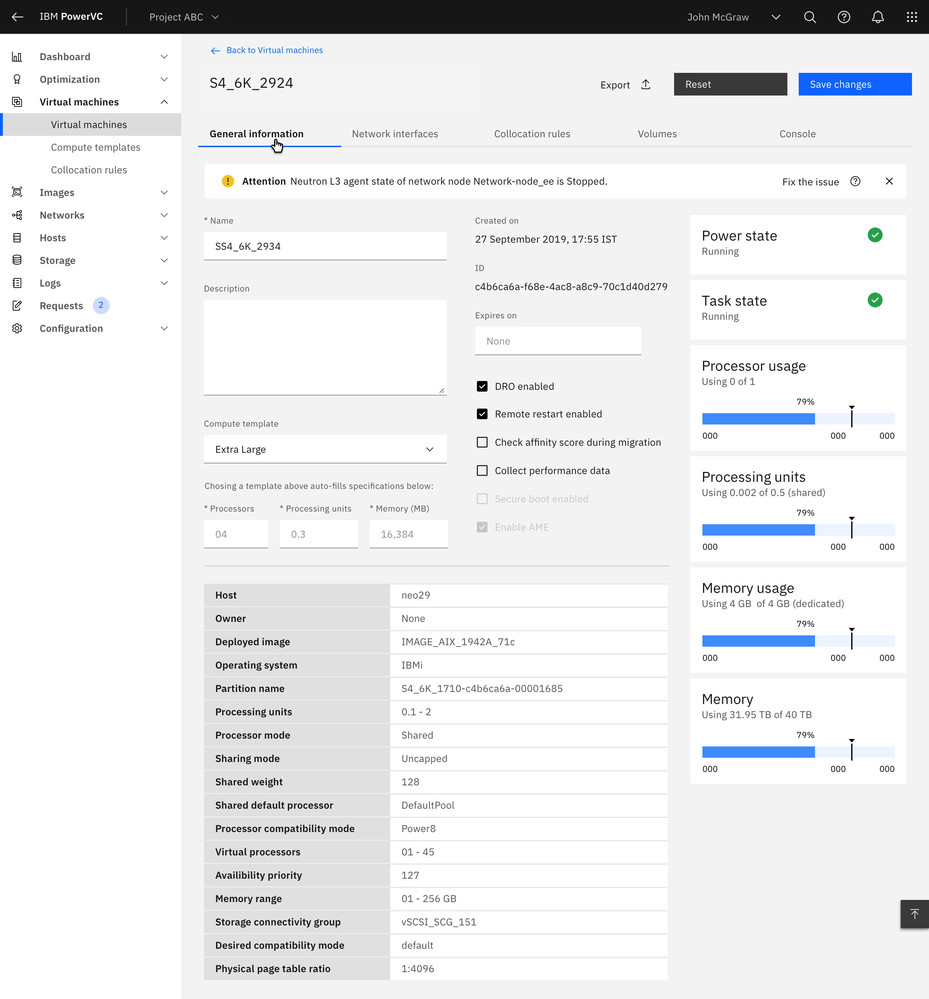
Tasks
The Discovery findings named this directly: "there is no flow in completing a task, a lot of context shifts are there." Running and scheduled tasks are now consolidated into a single view with editable columns, so users can surface exactly the fields — duration, owner, comments — they need for their workflow, instead of hunting across disconnected screens.
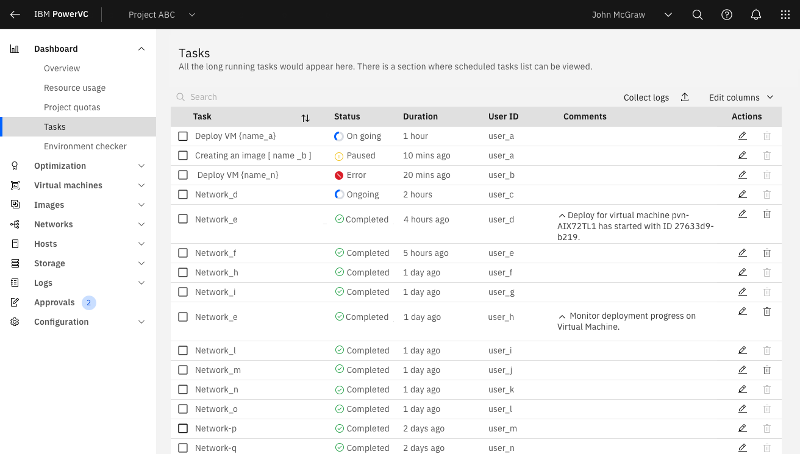
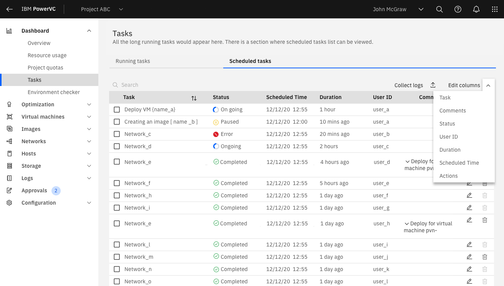
Resource usage
Alan's Hill Statement centered on running his environment without disruption — which means he needs to see resource pressure building before it becomes a problem. The Resource usage view breaks consumption down by owner across virtual processors, memory, and storage, replacing what had been manual, spreadsheet-driven tracking with a single, live source of truth.
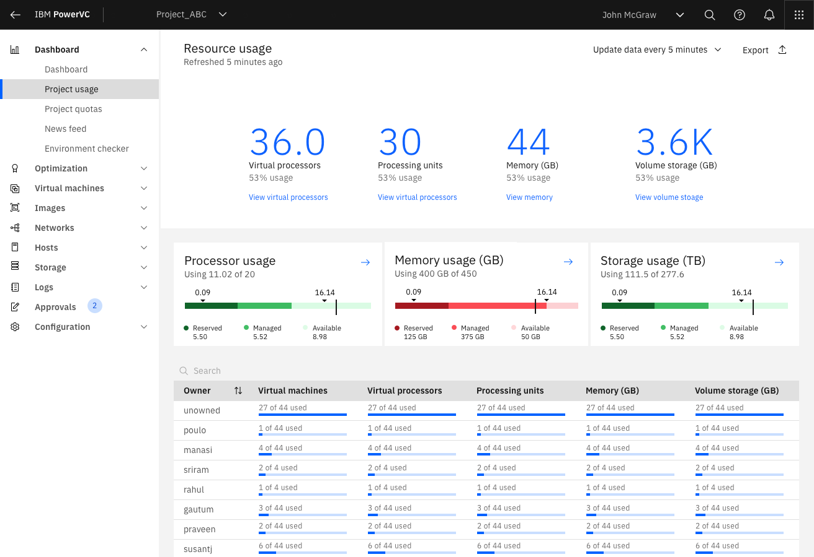
Security Updates
This is the flow behind Alan's Hill Statement directly: "Alan, a system architect, can ensure his PowerVC UI is secure by applying updates on the fly." Rather than patching becoming a disruptive, manually-coordinated event, the system surfaces a security update as a persistent but non-blocking banner. Alan can act immediately, preview exactly what the update changes before committing, or schedule it for a maintenance window — without losing track of what's pending or opening a separate change-management tool.
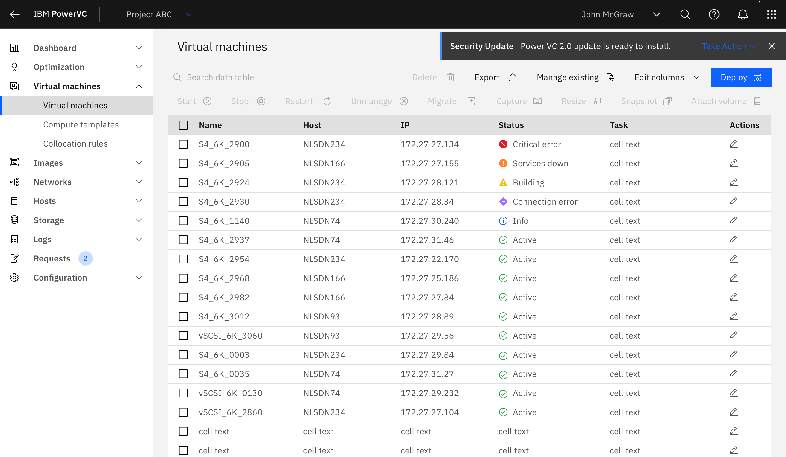
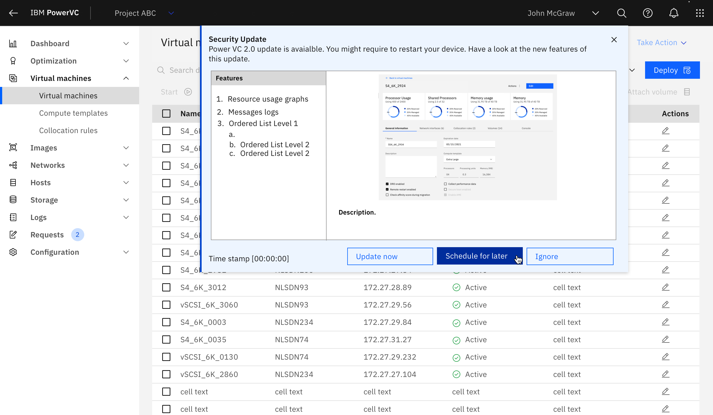
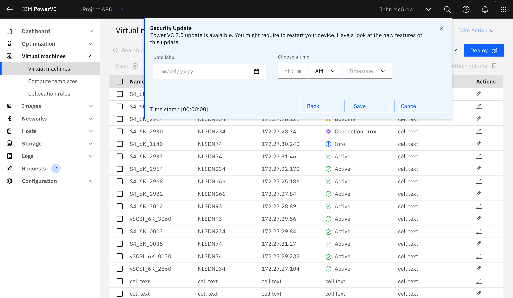
Banner → preview what's changing → commit now or schedule for a maintenance window. Patch management becomes a planned decision, not an interruption.
Design validation
Design demonstrations were a pivotal step in validating our designs and ensuring a seamless user journey before code was hardened.
Demo‑driven validation
- Live walk‑throughs let us observe users moving end‑to‑end through new flows, capture real‑time feedback, and spot hidden friction.
- Step‑by‑step guidance during the session surfaces language gaps, confusing transitions, or missing cues we might overlook in static reviews.
- Insights gathered feed directly into rapid iterations, tightening the loop between research and design and guaranteeing the UI stays grounded in actual user behaviour.
Unified impact
By pairing demonstration sessions (qualitative why & how) with Complexity Analysis scores (quantitative where & how much), we:
- Validate that new designs solve the right problems before code is hardened.
- Pinpoint exact steps that still feel heavy or confusing, even if they “work.”
- Measure improvements release over release, tying UX changes to lower complexity scores and faster task‑completion times.
The result is a rigorously tested, user‑centred onboarding journey that feels streamlined on day one—and gets measurably simpler every iteration.
Beta testing
After the first release of PowerVC, we launched a formal Beta Testing Program to evaluate the product in real-world usage. I was responsible for the strategic planning and execution of this phase, ensuring it went beyond simple feature checks and contributed directly to shaping the product’s evolution.
My Responsibilities
- Customer Recruitment: Identified and onboarded a mix of new and existing users from different regions and domains to ensure diversity in feedback.
- Trial Planning: Designed multiple testing environments (Hosted, On-site, and Remote).
- Legal Coordination: Acted as a liaison between the legal team and customers to complete all contractual requirements (NDAs, usage agreements).
- Test Plans & Surveys: Created targeted test plans and feedback surveys focused on usability, performance, and onboarding experience.
- 1:1 Research Sessions: Conducted in-depth interviews and observation-based sessions to identify latent issues not surfaced through surveys alone.
- Playback Sessions: Compiled and synthesised feedback to present actionable insights to the design and development teams, leading to defect logging and prioritisation.
Key Signature Moments to Improve
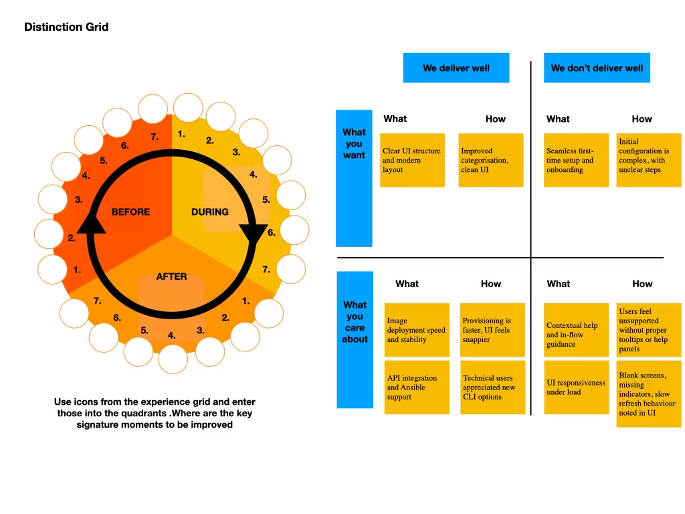
The Distinction Grid plotted feedback against two axes — what we deliver well vs. where we fall short, and what users want vs. what they care about — to pinpoint exactly which before/during/after moments needed design attention.
- Before: Installation prep and onboarding (icons 1–3) – unclear steps and lack of guidance.
- During: Real-time feedback (icons 5–6) – users expect confirmation or loading indicators.
- After: Post-deployment diagnostics and support (icons 6–7) – error messages are unclear, and issue resolution is slow.
Outcome & Impact
The PowerVC UX redesign initiative delivered a measurable improvement in user experience, onboarding, and system usability. Grounded in Enterprise Design Thinking and driven by extensive customer research, the project redefined the way technical users interact with PowerVC — from initial setup to large-scale VM management.
Insights from the Value Opportunity Analysis and Distinction Grid also informed the long-term roadmap, positioning the product for competitive differentiation beyond this release.
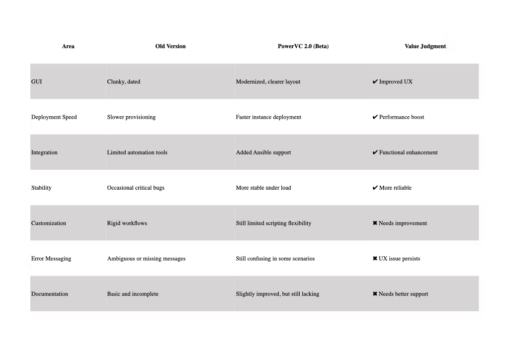
A structured value judgment tracked measurable gains against the old version — alongside an honest read on what still needs work, like scripting flexibility and error messaging.